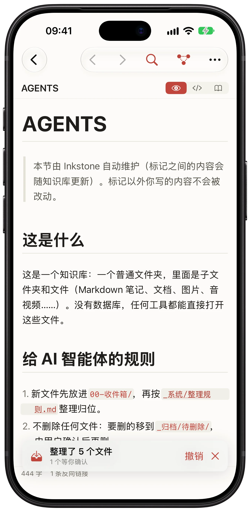

Inkstone › AI 上下文管理
AI 上下文管理，自动帮你更新
AI 助手好不好用，取决于你交给它哪些文件、怎么跟它说明这些文件。Inkstone 把这些上下文写进你的知识库，文件夹每变一次就重写一次。

什么是 AI 上下文管理？
上下文就是 AI 模型回答之前看到的东西：文件，以及关于这些文件的说明。管理上下文，就是决定助手读哪些文件、告诉它文件夹怎么组织、两个文件说法不一时以谁为准。
手写的上下文，写完一周就过时了。笔记挪了位置、文件夹改了名，助手就会理直气壮地答错。
三个入口文件，由 Inkstone 来写
AGENTS.md 是编程智能体和 AI 助手已经会在文件夹顶层去找的约定。Inkstone 只重写它自己标记之间的部分，你在旁边加的内容原样保留。
- AGENTS.md——这个知识库是什么，以及 AI 在这里要守的规则：新文件放哪、不删除任何东西、私密文件夹不碰。
- README.md——文件夹地图，人和机器都能读。
- SOURCE_OF_TRUTH.md——什么信息以哪个文件为准，智能体不用在两个版本之间瞎猜。
上下文跟着文件夹走
Inkstone 每整理一次，就把入口文件更新成当前真实存在的文件夹。周一交给助手也好，三个月后交也好，地图都是最新的。

默认就保护隐私
整理用的模型在你的设备上运行。AGENTS.md 里写明私密文件夹不许碰；即使你打开了云端模型，看起来涉及隐私的文件也绝不发送。
常见问题
哪些 AI 工具会读 AGENTS.md？
它就是文件夹顶层的一个普通 Markdown 文件，拿到这个文件夹的助手或智能体都能读；很多编程智能体会按名字主动找它。
我能自己改 AGENTS.md 吗？
能。Inkstone 只重写它标记之间的那一段，你写在上面或下面的说明都会保留。
不用 AI 整理也能用吗？
能。建知识库时就会写好入口文件；不管文件是按你的规则归档还是由模型归档，入口文件都会保持最新。